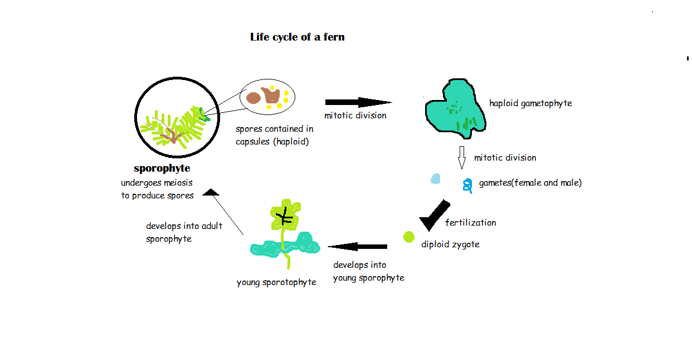

The purpose of meiosis is to produce genetically different offspring.This facilitates evolution, giving the species a greater chance of survival.Just like mitosis,meosis is preceeded by interphase. Meiosis can also be factioned into four distinct phases:prophase,metaphase,anaphase,telophase but executes two complete rounds of these phases. Meiosis has distinct phases(not present in meiosis)which are responsible for the recombination of genes.
In prophase the chromosomes are already duplicated.The nucleur disintegrates,the centriole breaks off into two pieces and migrate to the poles,the spindle fibres form. Crossing over and synapsis takes place in prophase I.Homologous pairs align side by side to form a tetrad(four chromatids)such that in the middle 2 non sister chromatids are adjacent to each other.The non-sister chromatids break and a piece of each chromatid is shared between them.There genes are shared.This process is known as crossing over.
During metaphase I,the chromosomes line up as homologous pairs along the equatorial plate(independent assortment).
In Anaphase I, reductional division takes place.The homologous chromosomes separate from each other other and are moved to opposite poles by telophase I,each cell is now a haploid cell because they do not have their corresponding homologous chromosome(single chromosomes).The two new daughter cells skip interphase and go through the same process as in mitosis except that they are haploid(meiosis II).Each new cell produces 2 new cells,collectively forming 4 haploid cells.if crossing over occurred then the result is 4 unidentical cells.Crossing over increases genetic variation.This is why humans spawn offspring that have different phenotypes(physical traits) because of the different combination of genes acquired.
Sometimes the chromosomes or chromatids do not separate properly.This error is known as non-disjunction.This occurs in anaphase I and II of meiosis.Nondisjunction results in gametes havung too many chromosomes(trisonomy) or two few chromosomes(monosomy).This results in genetic disorders of the affected offspringIn humans, down syndrome is a result of having an extra chromosome 21 whilst turner syndrome is a result of a missing X chromosome.
The homologous pairs,represented by two blocks ,move to the same pole.One of the two haploid cells end up with less chromosomes whislt the other has too many.after meiosis II,2 gametes are chromosomes in excess whilst the other two lack chromosomes.
Segregation gone Wrong
The sister chromatids,represented by 2 blocks, are pulled to the same pole. After meiosis II is complete,one of the two sets of the affected haploid cell has an excess of chromosomes whilst the other gametes lacks chromosomes.
Improper Separation of Chromatids
Both meiosis and mitosis are mechanisms of reproduction.Most mammals reproduce sexually(meiosis).Mitosis and meiosis play a key role in human development.Humans start off as a diploid zygote which was formed from a male and female gamete.They can only reproduce sexually and only exsist as as a diploid lifeform.Other organisms(mostly plants) may reproduce asexually through processes such as budding and fragmentation.Some animals like bees lay unfertilized eggs which develop into adult organisms(parthenogenisis).Mitosis is the main process in asexual reproduction.Some plants like fern and moss are capable of existing in both a haploid and diploid state(alteration of generations).Some animals like jellyfish are able to interchage between a lifeform that reproduces sexually(medusa form) to one that reproduces asexually(polyp form). Asexual reproduction facilitates the exponential growth of a species.
